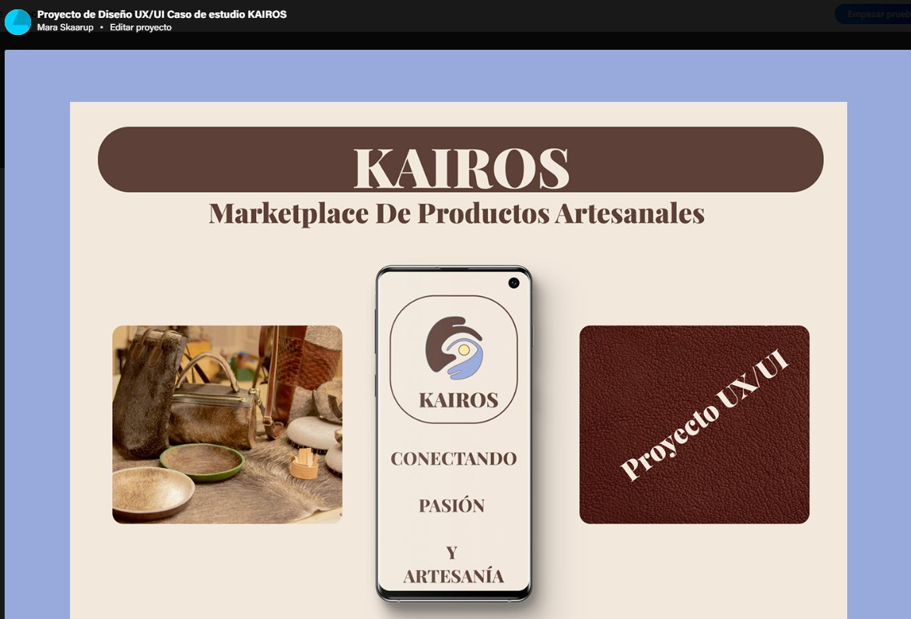
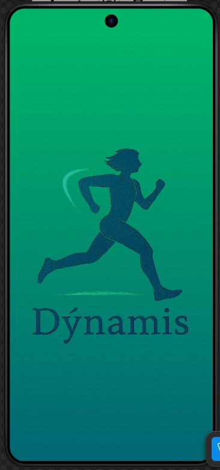
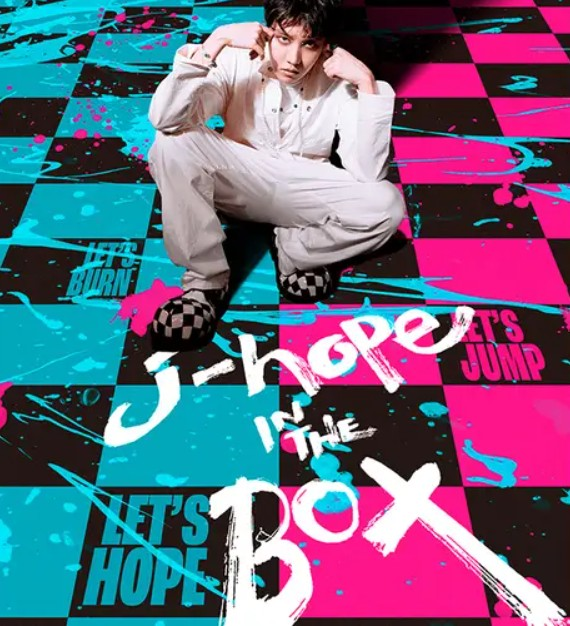
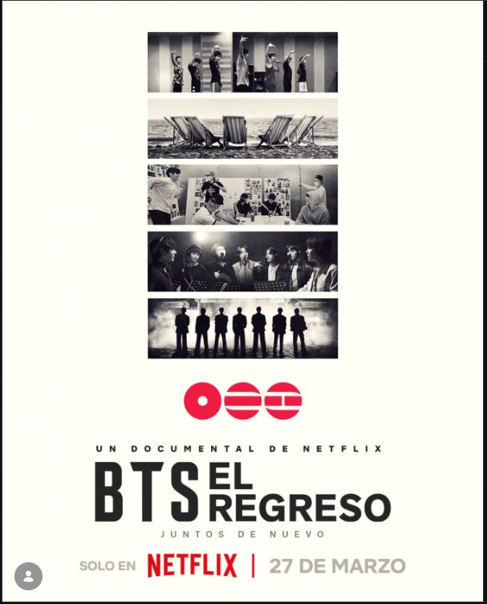

// SOBRE MÍ
Soy estudiante de programación y Ciencia de Datos, con un fuerte interés en el desarrollo web y en cómo la tecnología puede transformar la forma en que interpretamos el mundo.
Actualmente aprendo HTML y CSS, construyendo bases sólidas para interfaces claras y funcionales. Realicé un curso de UX/UI y utilizo Figma, lo que me permite diseñar experiencias digitales centradas en el usuario.
Cuento con experiencia en análisis de datos con Python, trabajando con datasets reales donde aplico limpieza, visualización y generación de insights.
Soy curiosa, en constante aprendizaje, interesada en el backend y la ingeniería de software, con el objetivo de desarrollar soluciones completas y con impacto real.
// PROYECTOS

APP PARA ARTESANO
Proyecto de App de un artesano realizado en Figma con prototipo, publicado en Behance.

APP GIMNASIO
App para la gestión de un gimnasio con funcionalidades de registro, pagos y listado de socios.
// HABILIDADES
// CINE & INSPIRACIÓN

J-HOPE IN THE BOX
Destaca el proceso individual, la exploración creativa y la importancia de salir de la zona de confort.
ORGULLO Y PREJUICIO
Su estética y profundidad emocional me recuerdan la importancia de los detalles y la experiencia del usuario.

BTS: EL REGRESO
Muestra el valor del trabajo en equipo y la evolución constante para alcanzar objetivos a largo plazo.